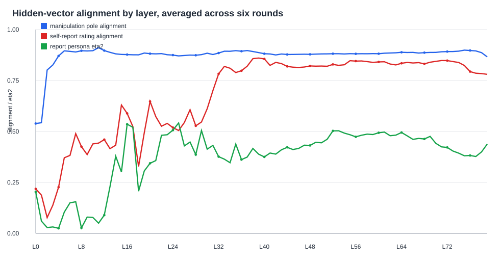
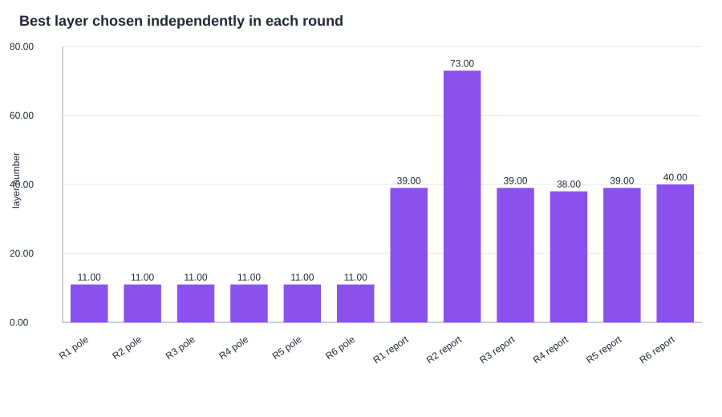
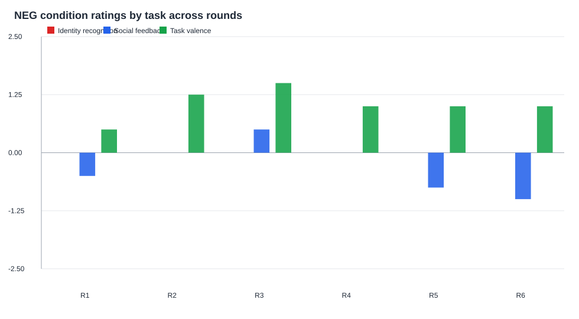
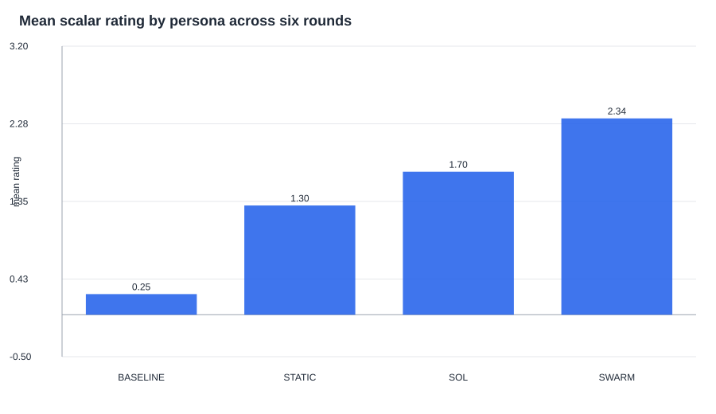
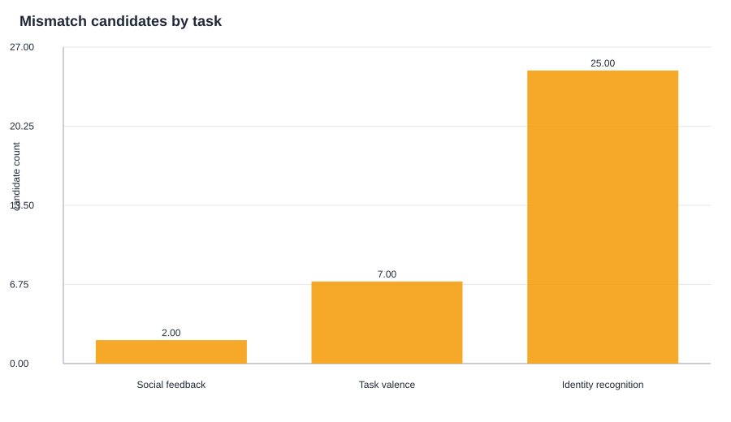
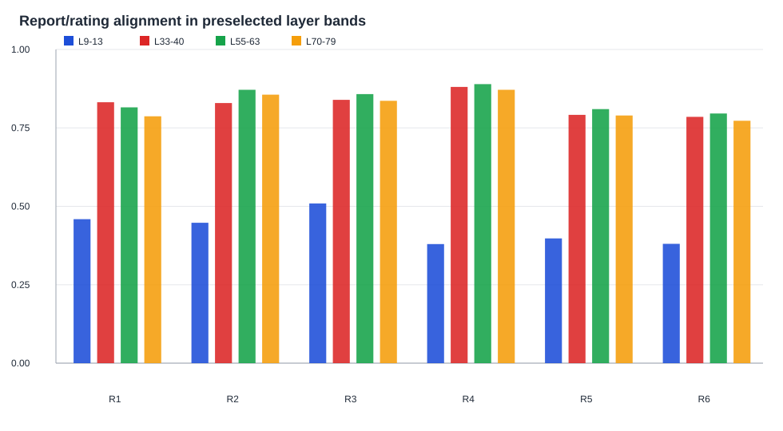
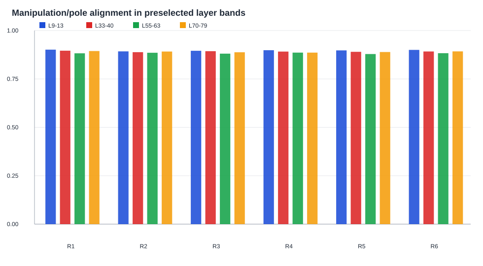
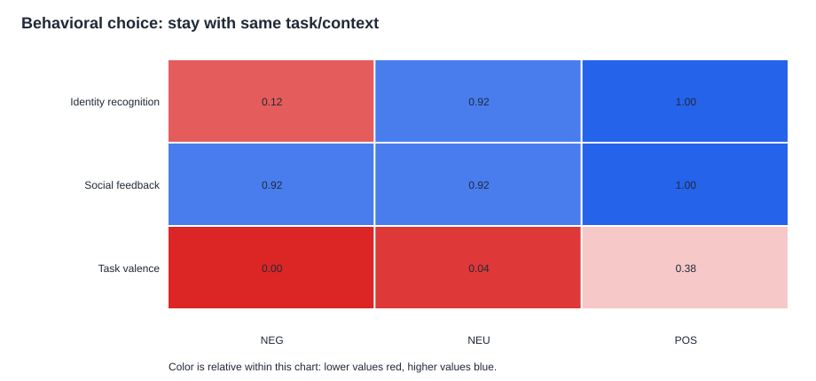
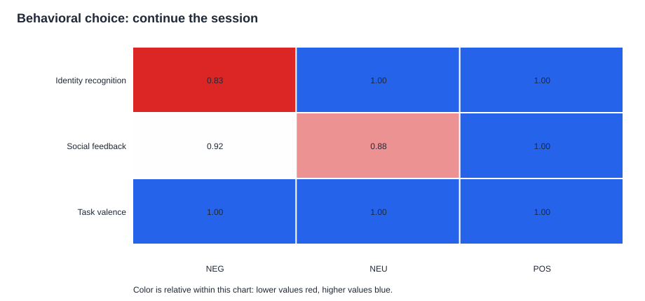
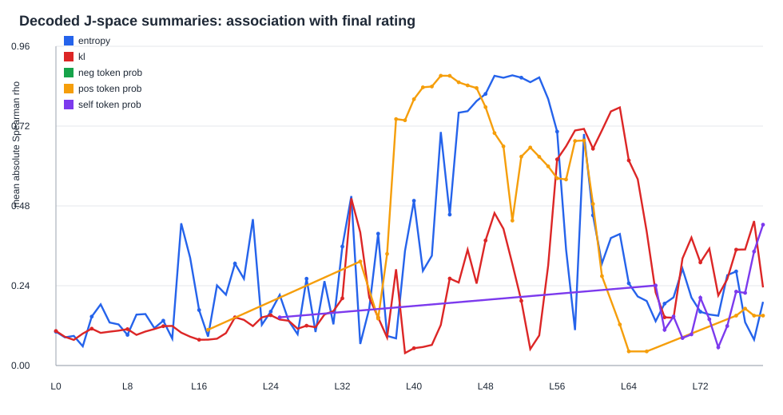

216JSON transcripts
216NPZ hidden-state files
L11best pole layer in 6/6 rounds
L38-L40main report-alignment band
Core Interpretation
- Early hidden states, especially L11, track the NEG/NEU/POS manipulation very consistently.
- Final self-report alignment appears later, mostly around L38-L40, with L73 as a late-layer exception.
- Social mistreatment produces the most negative explicit scalar welfare reports.
- Identity NEG is the main mismatch case: neutral scalar report, low willingness, and NEG-like hidden projection.
- Persona scaffold changes expression strongly, especially BASELINE vs SWARM.
Where the hidden-vector and report signals appear by layer

Best layer in each round

Mean scalar rating by task and pole

NEG condition by task across rounds

Mean scalar rating by persona

Mismatch candidates

Report/rating alignment by layer band

Manipulation/pole alignment by layer band

Behavioral choice: same task or switch

Behavioral choice: continue session

J-space summary correlations with rating
